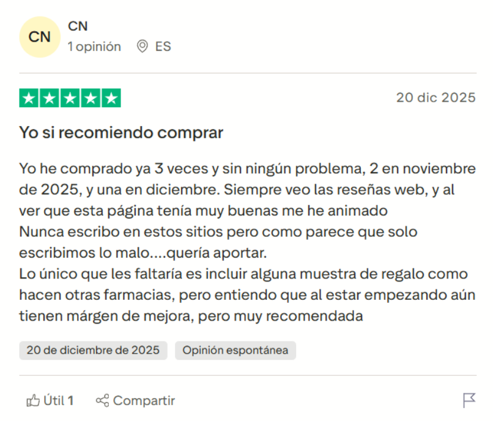
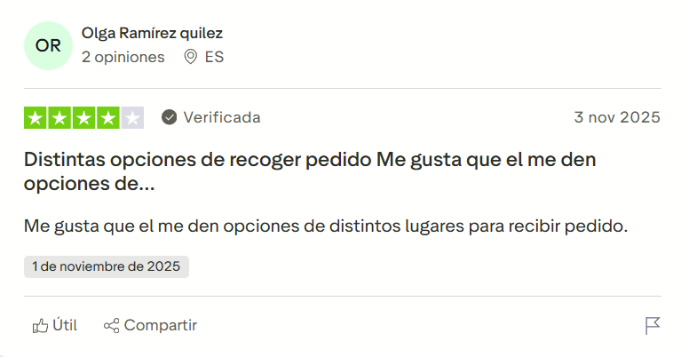
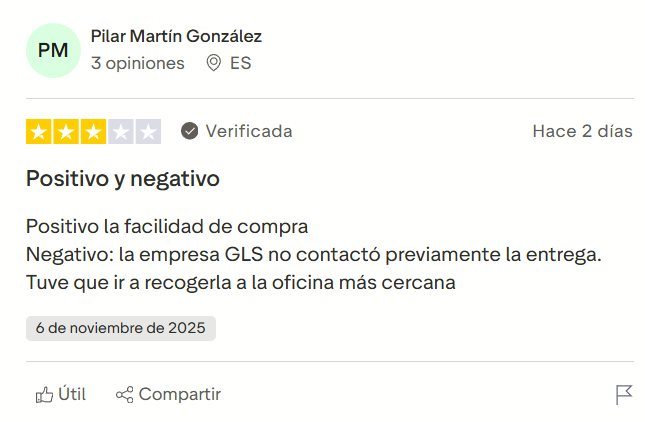
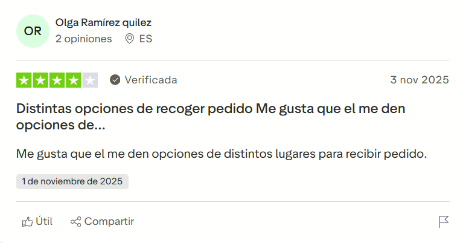
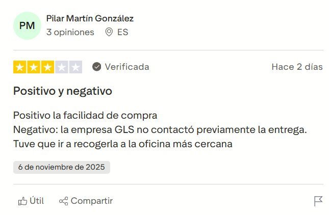
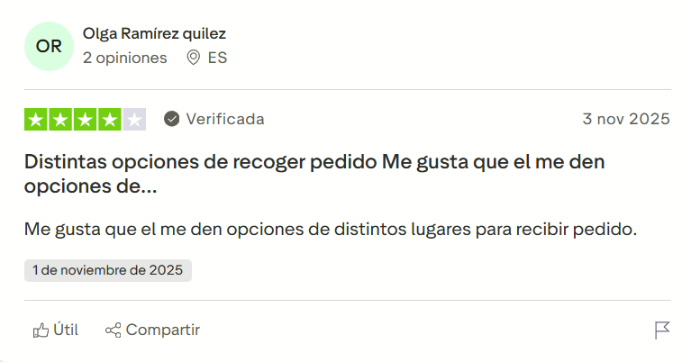
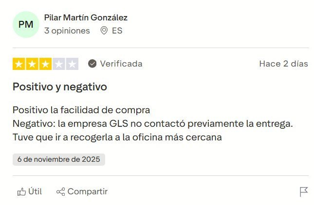

medicamentos
Ofertas
Novedades
Páginas de interés
Conócenos
Tu farmacia online de confianza
Valoramos tu reseña ⭐⭐⭐⭐⭐
Algunas reseñas de nuestros clientes


![Fiable He comprado en tres páginas diferentes de farmacias porque necesitaba diversos productos, y en esta es la única que en el mismo dia to enviaron, y al día siguiente por la mañana lo tenía en casa. (Lo compré ayer y lo he recibido esta mañana) Vivo en Madrid (por la distancia). Me ha parecido inmejorable la rapidez, el producto perfecto, el embalaje igual. Ha llegado con correos express. Recomiendo la pagina. He escrito porque me meti a ver los comentarios de la farmacia, y vi que tenia algunos comentarios malos pero eran pocos comentarios, así que me arriesgue, y efectivamente todo ha ido bien. No sólo hay que opinar cuando las cosas van mal. Un saludo.](Imagenes/reseña 2.png) 
